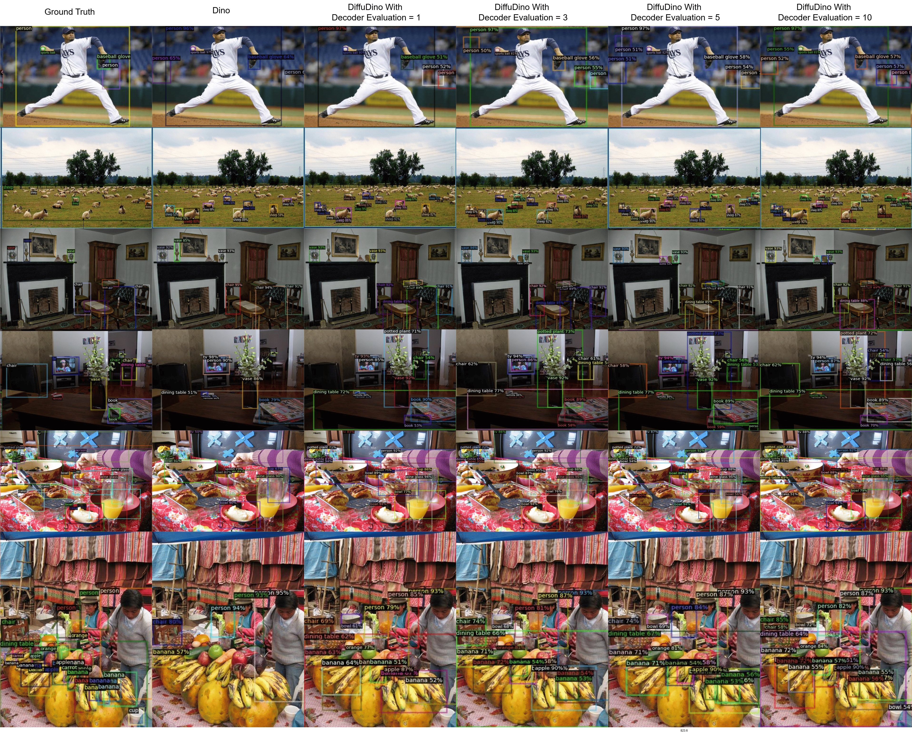
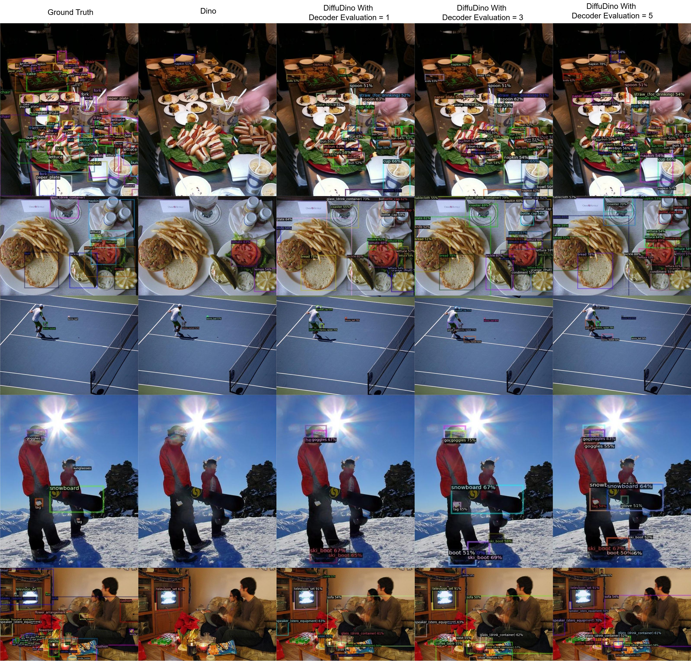

Visualization
Qualitative Results
Visual comparison of detection results showing improvements over baselines.

Baseline Comparison
Side-by-side qualitative comparison on COCO 2017 val: Deformable DETR vs. DiffuDETR and DINO vs. DiffuDINO. Our diffusion-based models produce more accurate and complete detections, especially in crowded scenes with overlapping objects.

COCO — Decoder Steps
DiffuDINO results at different decoder evaluation steps ($t = 1, 3, 5, 10$) compared to DINO baseline and ground truth. Even $t = 1$ already surpasses DINO.

LVIS — Decoder Steps
Same comparison on LVIS validation, showing improved handling of long-tail categories and fine-grained objects across varying decoder steps.